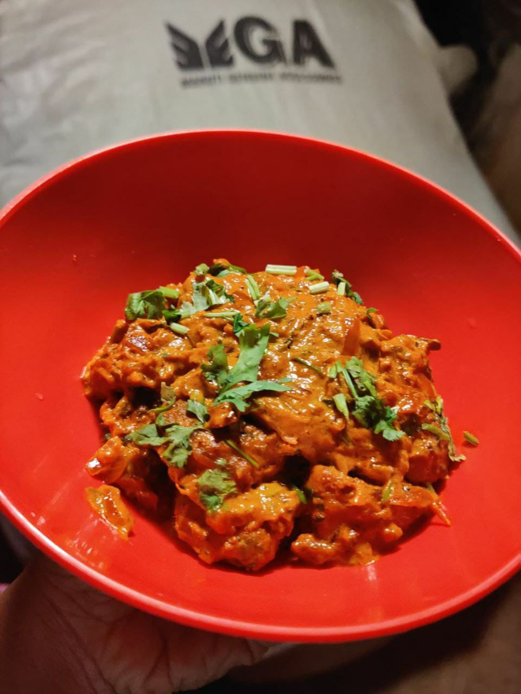

Crab Masala

Ingredients
- Peppercorns
- Cumin seeds
- Fennel seeds
- Garlic 10 nos Chopped
- Chopped ginger
- Water
- Crab 400 gms
- Gingelly Oil - 2 tbsp
- Onion - 4 nos thinly Sliced
- Green Chilli - 2 nos
- Ground Masala Paste
- Turmeric powder
- Chilli Powder
- Coriander powder
- Tomato 1 chopped
- Curry leaves
Method of Preperation
- To a mixer jar, add peppercorns, cumin seeds, fennel seeds, garlic, ginger. Grind it
- Add some Water and grind it fine paste
- Heat a pan with oil. Add onions and saute for 2 mins
- Add green chillies, curry leaves and saute along
- Once the onions have turned to a golden color, add the ground paste.
- Add salt, turmeric powder, chilli powder, coriander powder and mix well.
- Add tomato and saute for 5 mins
- Add the cleaned and cut crabs and mix well
- Add water and mix well, Cook for 10 mins
- Finally add some curry leaves and serve it hot.